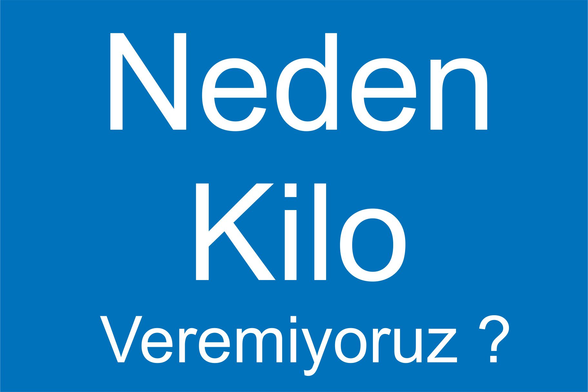

⊁1
⊁1
Uyku Düzeniniz Yok
Bir gecede 9 saatten fazla uyumak kulağa hoş gelebilir, ancak çok fazla veya çok az uyku - geceleri 5 saatten az - kilo alımına sebep olabilir. Her ikisi de vücudunuz da iştahınızı ve açlığınızı kontrol eden hormonların üretimini atabilir. Ve bu durum kendinizi gergin hissetmenize neden olduğu için, antrenmanlarınızı da atlayabilirsiniz.
⊁2
Yeterince Su İçmiyorsunuz !
Her gün 2 ila 6 bardak berrak, temiz su, ilave kilo vermenize yardımcı olabilir. Suyun hiç kalorisi yoktur, bu nedenle kilo almadan susuzluğunuzu giderir. Yeterince su içtiğinde, şekerli içecek olan gazlı içecekler, meyve suları veya kahve içeceklerini içme olasılığını düşürebilir. Tatlı içeceklerdeki yüksek kaloriler fazla kilo alımına neden olabilir.
⊁2
Öğünlerinizin Arasu Çok Uzun ! !
Öğünlerinizin arası çok uzun olduğunda , metabolizmanız yavaşlar ve bir sonraki öğünde yediğiniz kalorileri yakamaz. Bu ekstra kalori, olarak depolanır. Ayrıca çok aç olduğunuz için normalden daha fazla yiyebilirsin. Sık sık ve az az yemek gerekiyor. Hiç aç kalmamalısınız aç kaldığınız da kortizon hormonu salgılanır ve kaslarınız erir.
⊁2
Dışarıda Yemek Yemek ! !
Tamam, yemek yapmaktan nefret ediyorsun. Ancak öğünlerinizin çoğunu restoranlarda yerseniz, kilonuzu kontrol altında tutmak zor olabilir. Sözde hafif yemekler bile, sizin düşündüğünüzden daha fazla kalori içerebilir. Ve biz de sadece akşam yemeğinden bahsetmiyoruz. Her gün dışarıda öğle yemeği yiyen insanlar, kendi yaptığı yemekleri yiyen insanlara göre 5 kilo daha ağır olabilir.
⊁2
Bütün Gün Oturuyorsan ! !
Çalışma masanız ya da TV hobiniz bu sinir bozucu kiloları vermenizi zorlaştırabilir. Çoğu zaman oturduğunuzda ve çok fazla yemek yediğinizde vucudunuz tembelleşir - bu şekilde davranırsanız kilo alabilirsiniz. Gün boyunca yapılan kısa egzersiz molaları bile sağlıklı kalmanıza yardımcı olabilir. Toplantılar veya en sevdiğiniz şovlar için 10 dakikalık veya üç dakikalık yürüyüşlere çıkın.
⊁2
Egzersizleri Yemekle Ödüllendirirseniz ! !
Egzersiz, kilo vermenin harika bir yoludur - kalori yakar ve kas kütlesi büyütür. Ancak, her egzersizden sonra büyük bir akşam yemeği yerseniz, yaptığınız sporu mahvedebilirsiniz. Yüksek şekerli spor içeceklerine ve protein barlarına da dikkat edin. Onlar susuzluğunu gidermeye yardım edebilir veya size egzersiz sonrası bir enerji verebilir fakat , onların kalorisi çok yüksek olabilir.
⊁2
2 Aşırı Alkol Tüketmek !
İster şarap ister bira ister karışık içki için hiç fark etmez, alkol günlük besin ihtiyacınızı artıran kalorilere sahiptir. Günde 3 veya daha fazla kadeh içki içiyorsanız, ne tür bir alkol kullandığınız önemli değil, kilo alma olasılığınız daha yüksektir. Akşam yemeğinde bir kadeh şarap gibi hafif içkiler içmeye devam edebiliriniz. Bu aslında kilo vermenizi de sağlayabilir.
⊁2